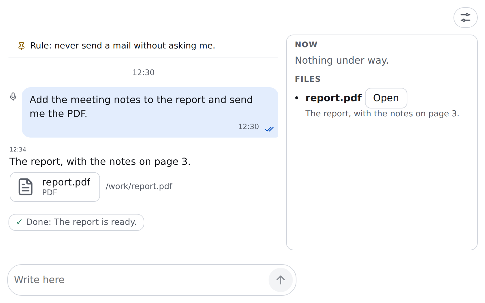

Feature
Chat with your agents from anywhere
Parley: a chat beside the terminal. The agent asks; you tap an answer.

- Chat beside the terminal, on phone, tablet or computer.
- Questions come as buttons. Your phone is alerted.
- Dictate: the microphone types what you say.
How
- Turn on chat for a conversation.
- The agent installs Parley itself.
- Talk. Files travel both ways.
Limits
- Off by default, per conversation.
- Dictation sends your voice to the provider you chose.
Questions
Is anything cut or summarised?
Never. The server keeps its own copy of the thread. A rewrite shows "History changed here".
Does it read my terminal?
No. What the agent prints is never read. Its terminal stays one tap away.
Which phones?
Any browser. The page installs as an app; on iPhone, alerts once installed.